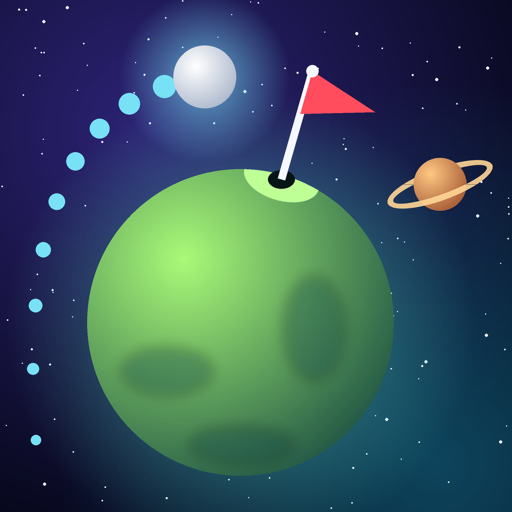

[ how we build ]
A father, a son, and overcli.
We design the games together. overcli — the agent desktop app we also make — builds them with a flow: one model plans, another builds, a third checks the work with Unity’s own tests. See the flow ↓ Then we pick up a phone and play.
[ the loop ]
Spec, build, test, play.
The agent does the long, careful work. The parts only people can judge — how it feels in your hands — stay ours.
Every game starts as one document: its pillars, rules, tuning numbers and milestones. It’s the source of truth for us and for the agent.
An overcli flow works through the milestones on its own: one model plans, another builds, a third compiles in Unity’s batch mode and runs the tests.
A Build All menu runs every test. Bots fly every course and putt every hole; the screenshots are checked.
Tilt, touch, two phones on the Wi-Fi, how it feels — the parts no test can judge. That’s our job.
Each game copies what it needs from the last one — terrain, share codes, the Lab pattern — and never edits its siblings.
Every session ends with a build log: what was built, what passed, and what nobody has tried yet.
[ the flow ] · built with overcli flows
Six steps, three models.
A flow is a recipe overcli runs on its own: each step gets its own model, its own tools and the work of the steps before it. This is the one our games are built with, written down from the runs that built them.
- 01PlanArchitect · Claude Fable 5.2
Reads CLAUDE.md and the spec, picks the milestones and plans them.
→ plan.md - 02BuildBuilder · Claude Sonnet 5.5
Writes the milestones in Unity, compiling in batch mode as it goes.
→ diff - 03VerifyLead · Claude Opus 5.5
Compiles, runs Build All and every test, lets a bot play, checks the screenshots.
→ verify.mdapproval gate - 04FixBuilder · Claude Sonnet 5.5
One pass on exactly what verify blocked — or “No changes required.”
→ diff - 05TestsBuilder · Claude Sonnet 5.5
Extends the tests for what was just built, and runs them.
→ tests_report.md - 06LogLead · Claude Opus 5.5
Writes spec/BUILD_LOG.md: what passed, and what nobody has tried yet.
→ BUILD_LOG.md - →We play itLionel & Owen · on an iPhone
Tilt, touch, two phones on the Wi-Fi, how it feels. Then the next spec change.
 Crater
CraterPlan → Build → Review → Tests → PolishOne overnight run. Review sent the build back once; then tests, then a polish pass.
PuttnikPlan → Build → VerifyOne unattended run. Verify sent the build back once, then approved it. Glidegang
GlidegangOne long sessionAll twelve milestones in a single unattended session, before the flow existed.
Built with overcli.
overcli puts Claude Code, Codex and the other agent CLIs in one window, then lets them work in long sessions, review each other and run in loops. It’s how these games get built — and it’s free and open source.